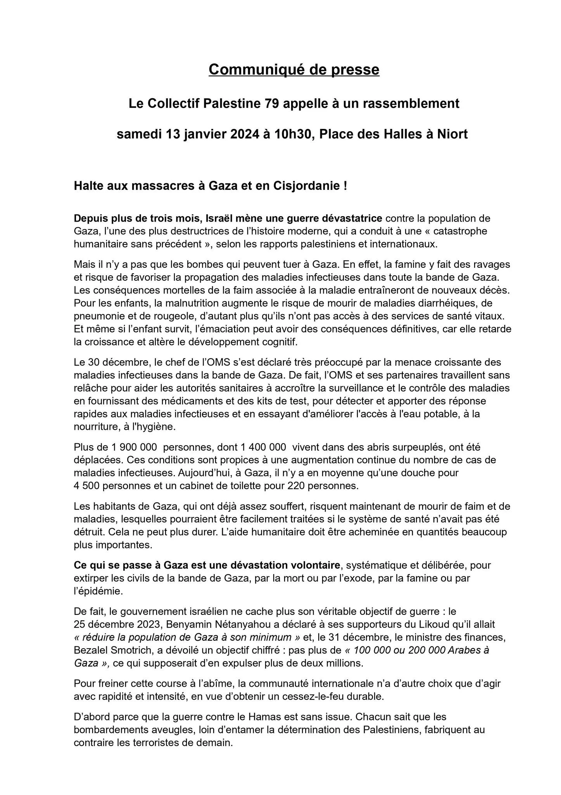
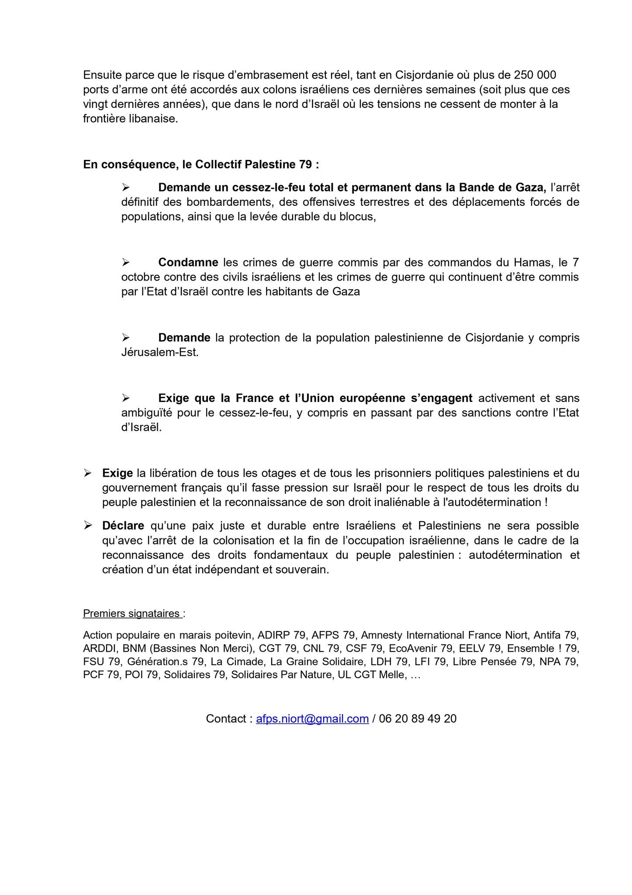

Appel relayé
À Niort, l’appel du Collectif Palestine 79 à se rassembler le 13 janvier
Date indiquée par Facebook · 12 janvier 2024
Repères éditoriaux
Nous avons relayé le communiqué du Collectif Palestine 79. Le compte rendu et les photos de la marche sont accessibles dans la publication associée.
Texte conservé avec la publication
Le Collectif Palestine 79 appelle à un rassemblement :
Samedi 13 janvier 2024 à 10h30 Place des Halles à Niort
pour exiger un cessez-le-feu immédiat à Gaza, exprimer notre soutien au peuple palestinien et faire entendre notre voix.


Sources
Archive rouge · export Facebook · AR-0002-FB-01502
À lire aussi · À Niort, rassemblement et marche pour un cessez-le-feu durable